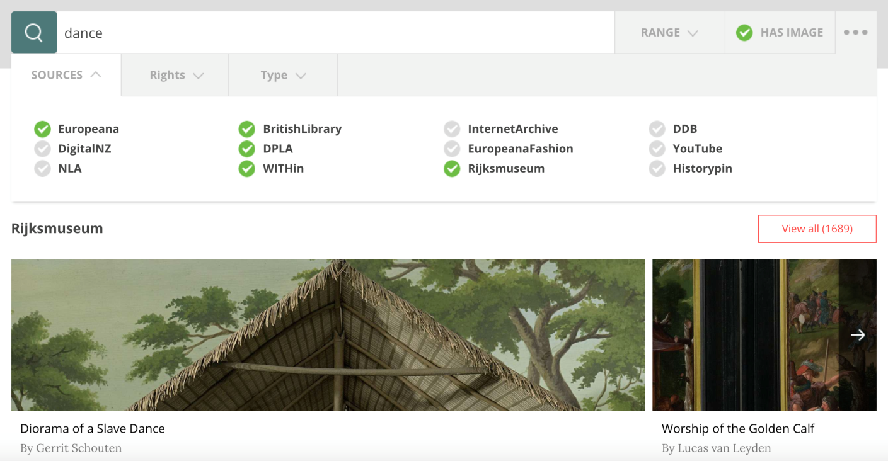

The cooperative content sourcing and publication platform WITH targets the creative and cultural industries, aiming to increase the use and re-use of digital cultural content that is available through a variety of sources. The platform addresses all the stakeholders of these industries, from content holders and producers, to application and service developers, scholars and normal users. WITH offers services that facilitate the discovery of cultural resources that meet users' criteria in order to be collected and re-used for artistic creation, promotion of innovation and showcasing of the social and economic value of cultural material. It has evolved through a series of hackathons, workshops and seminars in the framework of EC-funded projects such as Europeana Space, which aimed to produce new applications and services based on published resources through the use of the platform's programmatic interfaces (APIs). These interactions led to the intuitive integration of linked data principles and related services that can enhance and enrich available web resources, as well as to the development of a complete annotation and crowdsourcing infrastructure that is aligned with the efforts of W3C’s Open Annotation Community Group.
Introduction
In recent years, the Cultural Heritage (CH) sector has seen an incredible transformation: a great deal of content from thousands of cultural institutions, such as museums, libraries and archives has been aggregated in digital platforms such as Europeana and The Digital Public Library of America. These platforms operate as cross-domain hubs that distribute aggregated content, readily accessible to users who wish to search and study it, or available through creative apps and web services that reuse and repurpose it.
While these platforms have greatly succeeded in aggregating and publishing content, certain basic functionalities are not always available directly from their web pages or APIs. For instance, consider users that try to search for items related to historical events. First they would have to access repositories individually to locate, process and associate content with additional sources of contextual information. Faceted search options are not always implemented so they face the difficulty of manually filtering their search results. Then, without any better way to store their items of interest, users would have to resolve to keeping web browser bookmarks and saving images to their computer. For users who want to use their retrieved content in tasks that require collaboration with others, this can become cumbersome.
Developers have an equally hard time handling different data sources and APIs, which adds overhead in their code. More so, there are other issues that have to be solved and certain difficulties arise: adapting or developing a unified data model and transforming metadata accordingly, handling media, creating quality metrics, and synchronizing resources.
WITH offers users an interface that gives solutions to all the aforementioned issues, and provides many other useful functionalities. For developers, it offers an open API that automates these cumbersome tasks and accelerates their developing and prototyping processes. In this paper, we present the main services available through the WITH web interface and API and also discuss potential use cases for users and developers.
The WITH portal
The main motivation for WITH is to utilize CH repositories in unison and provide necessary front-end services to users and an open API to developers who wish to access unified services and publicly available institutional and user generated content. In its core, WITH is a platform for CH retrieval, integration, management, crowdsourcing and curation. It offers a faceted search interface that allows federated search for digital content to a range of different and unconnected repositories and databases from a single access point. Resources from these repositories can be added to collections managed by users, or shared in user groups. Collections in WITH can then be modified, enriched or automatically annotated with terms from linked open data vocabularies for CH.
For content holders WITH offers an easy to use content & metadata repository and management system, that can ensure interoperability with standards, best practices and aggregator guidelines. The platform includes a customizable portal, with dedicated Spaces associated with the content holder, for the visualization and web publication of digital collections, exhibitions and stories, while facilitating the public's access to content available for creative re-use. Spaces alleviate the need for specialized infrastructure by offering an easy alternative solution for the publication of Linked Open Data, an important task in the CH area . Furthermore, for aggregators WITH integrates the metadata interoperability platform (MINT), an open source, web based platform that fully implements workflows for the ingestion, formal mapping, transformation and aggregation of metadata records.
Large repositories of CH content often provide high quality content curated by experts, in the form of collections of records. All those collections can be imported to WITH, with some hosting repositories, like Europeana, having direct importing capabilities. This high quality content can be accessed through the search service of WITH, so users or developers can opt to limit their searches to these collections and have a guaranteed quality level for their personal collections and exhibitions, or external applications.
For users WITH is a great starting point for the discovery of CH resources that reside in distributed repositories. They can combine different sources with their own material, allowing them to offer new interesting narratives for the appreciation and communication of culture. Records from user collections can be used to create virtual exhibitions that allow for a quick and easy way to publish a presentation or a narrative that can be shown to an audience, such as a group of students, without having to use any tools outside WITH, accessed and edited directly from a web browser. Groups of users can also collaborate in their shared exhibitions and add or modify content together.
CH professionals are offered the tools to compose and contextualize eclectic collections, contributing to the promotion, improvement, and evolution of digital CH knowledge. Developers can use the platform as a back-end to build applications that reuse digital heritage. The WITH API publicly offers all the available data and services of the platform, fully accessible to any developers who wish to utilize it to their applications. The API uses standard web technologies so it can be used directly with a web application, or through another backend service. The API is fully documented and WITH offers a developer's page where all calls can be tested.
WITH offers a simple but sophisticated federated search interface which performs parallel searches in a number of major repositories of CH Objects, like Europeana, DPLA, Rijksmuseum, the National Library of Australia, Digital New Zealand, and of media and web resources, such as YouTube and the Internet Archive. New repositories are being added constantly. The search interface, shown in , supports an efficient faceted search feature with elements acquired and aggregated from the metadata of the results themselves, from which users can choose and filter their results.
Once a search term or phrase has been provided, WITH makes a parallel search to all selected repositories and creates facets that can be used to narrow down results. Also, all items are transformed to the WITH data model, so they can be instantly included in collections created by users and stored in their user profiles. This transformation facilitates the transition from items to web resources allowing for greater expressivity and more powerful collections. The search results as well as the facets can be accessed through the API, so other developers can easily include this search feature in their applications, or even improve on it and adapt it to their needs.

WITH's federated search interface.
The WITH data model follows the paradigm of major CH repositories, such as Europeana, including extensions in order to satisfy compatibility restrictions with various different data models. All records imported in collections in the platform are instantly transformed in the internal data model, while their original record structure is kept intact as a backup and can still be accessed. The WITH data model is compliant with the Europeana Data Model (EDM) and supports two-way transformation capabilities, therefore all changes in the records in their internal data model can still be exported in different formats. The WITH API also supports various serializations such as JSON, XML, RDF, etc. This allows for all resources in WITH to be shared with other external applications or platforms.
Enrichment, Automated Annotations and Crowdsourcing
Collections of records in WITH can be created and modified from single users as well as user groups. New records can be uploaded from users and included in their collections, or become publicly available. Existing records and collections in WITH can have their metadata augmented and enriched by users, allowing for the curation and management of large collections through coordinated efforts . Any record modified can be made publicly accessible in the platform, so collections can also include already edited records. The platform implements a crowdsourcing infrastructure for annotations, complete with validation and user voting functionalities, following the guidelines and specifications of the W3C Open Annotation Community Group.
Annotating items can be achieved either manually or automatically using artificial intelligence tools. All generated annotations use resources of widely used vocabularies and ontologies such as the Getty Art & Architecture Thesaurus (AAT), the GEMET Thesaurus, the Musical Instruments Museums Online (MIMO) Thesaurus, the Europeana Fashion Thesaurus, the Europeana photoVocabulary, Wordnet, Schema.org, and of Linked Data datasets such as DBpedia and Geonames. The manual annotation process is assisted by an autocomplete functionality, shown in , that suggests to the user textually matching resources from a selected subset of the underlying set of vocabularies and datasets as she types. The automatic annotation process uses natural language processing, string matching and dictionary lookup tools to analyze the existing textual metadata of records (eg. title and description) in order to detect in them occurrences of named entities and terms that belong to the underlying set of vocabulary and dataset resources. Automatic annotation of textual metadata can also be performed using third-party services like DBpedia Spotlight. Multilingualism is supported to the extent permitted by the underlying vocabularies, datasets and third-party tools. WITH also integrates as an external service Pundit, an open source semantic annotation tool allowing users to create structured data annotating the web, and can be used for crowdsourcing annotations of collections such as those in the Europeana Sounds space. Manual geotagging of records is also supported.
Apart from textual metadata, image related metadata can also be extracted through the CultIVML service, an automatic image annotation tool . Images are analyzed using state-of-the-art computer vision algorithms exploiting Deep Neural Networks (NNs). The automatic annotation includes localization of human faces and extraction of attributes such as gender, age and emotions for people. Localization of a diverse set of common objects is also part of the annotation, as well as generic image classification. The extracted annotations are terms of the WordNet vocabulary, further exploited by the natural language processing pipeline.
All annotations are visible to the WITH users, who can judge the validity of each individual statement and record and approve or disapprove action accordingly. These actions can be performed either at a record-by-record level or at the collection level.
Annotating web reso urces in WITH.
Future
WITH is constantly evolving with new ideas and features being designed and implemented in its framework. The first task that is underway is an effort to clean and curate the metadata of all items imported in WITH. This is a task that requires a text analytics framework augmented with a user voting approval system like the one used in annotations. Also, a quality measure of resources will be implemented and will be part of a workflow of enrichment that reports amendments back to the content provider who can comment on or approve the enrichment of original content.
Other extensions are underway, such as an ontology assisted semantic search and autocomplete system for searches in internal collections, and the implementation of a recommender engine to assist in the discovery of new records matching a collection. In the same spirit, ontologies can be enriched from the data itself, a task that could involve implementing some prototype breakthrough ideas developed in the Intelligent Systems, Content & Interaction Lab of the NTUA .
References
Simou, N., Evain, J.P., Drosopoulos, N., Tzouvaras, V. Linked European television heritage. Semantic Web 4: (3) ((2013)), 323–329.
Kollia, I., Tzouvaras, V., Drosopoulos, N., Stamou, G. A systemic approach for effective semantic access to cultural content. Semantic Web, vol. 3, no. 1, 2012, pp. 65–83.
Varytimidis, C., Tsatiris, G., Rapantzikos, K., Kollias, S. A systemic approach to automatic metadata extraction from multimedia content. In Computational Intelligence (SSCI), 2016 IEEE Symposium Series on, pp. 1-7. IEEE, 2016.